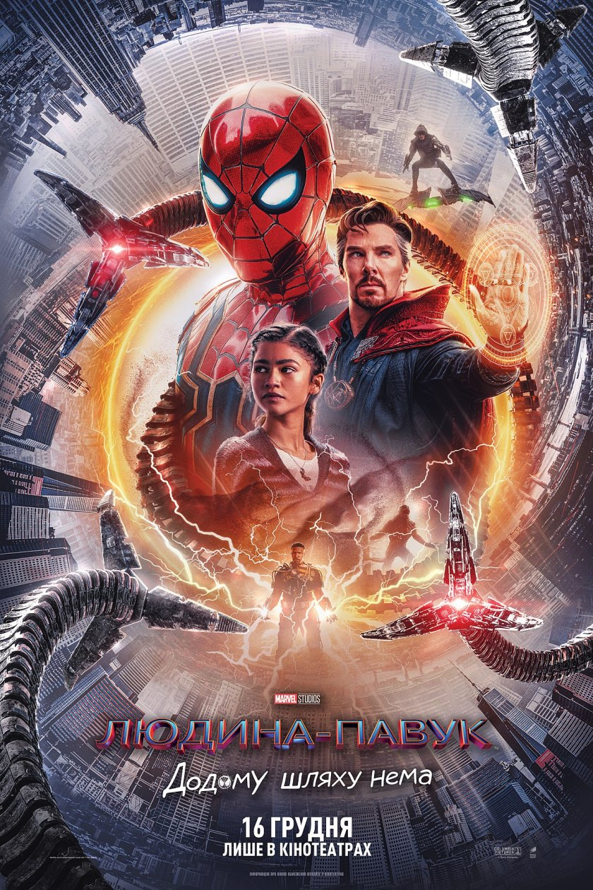

Людина Павук: Додому шляху нема
Інфо: американський супергеройський фільм,
заснований на коміксах видавництва Marvel
Comics про однойменного персонажа. Фільм
спродюсований Marvel Studios і Columbia
Pictures, спільно з Sony Pictures
Entertainment як дистриб'ютором. Є двадцять
сьомою в рамках Кіновсесвіту Marvel, і
четвертою стрічкою в Четвертій фазі. Є
продовженням фільму «Людина-павук:
Повернення додому» (2017) та «Людина-павук:
Далеко від дому» (2019). Режисер фільму:
Джон Воттс, сценаристи: Кріс Маккенна та
Ерік Соммерс, до головної ролі повернеться
Том Голланд у ролі Пітера Паркера /
Людини-павука, а також Зендая, Джон Фавро,
Джейкоб Баталон, Маріса Томей, Джеймі Фокс
та з'явиться Бенедикт Камбербетч.